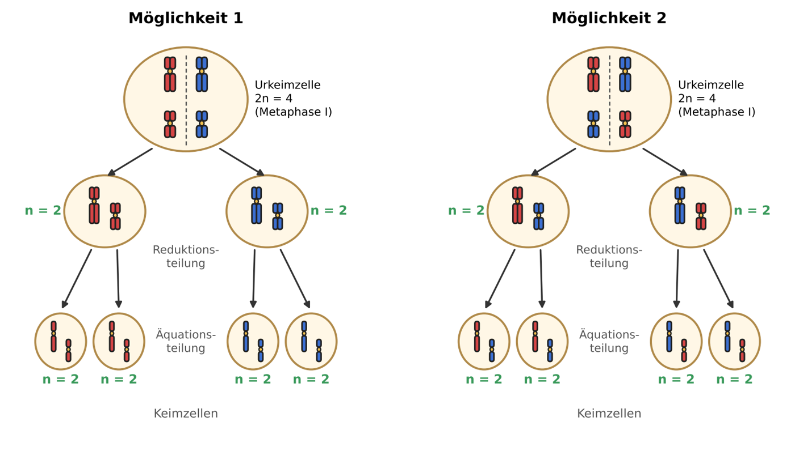

So nutzen Sie die Hilfen: Versuchen Sie es erst allein. Öffnen Sie dann Hilfe 1, danach Hilfe 2. Die Lösung dient zur Kontrolle – vergleichen Sie sie mit Ihrer eigenen Antwort und verbessern Sie diese im Hefter oder im PDF.
Aufgabe 1: Die Zufallsverteilung der homologen Chromosomen
- Ergänzen Sie in Abb. 1 die Möglichkeit 2 (im Ausdruck): Zeichnen Sie die Chromosomen in alle Zellen ein und tragen Sie den Chromosomensatz ein!
- Geben Sie an, wie viele verschiedene Keimzelltypen bei zwei Chromosomenpaaren insgesamt entstehen können, und begründen Sie mithilfe von Abb. 1!
- Ermitteln Sie im Meiose-Labor, wie viele verschiedene Keimzelltypen bei drei Chromosomenpaaren möglich sind!
- Leiten Sie eine Formel für die Anzahl der Kombinationsmöglichkeiten bei n Chromosomenpaaren ab und berechnen Sie die Anzahl für den Menschen!
Hilfe 1
a) Gehen Sie wie bei Möglichkeit 1 vor: Was links der gestrichelten Linie liegt, gelangt in die linke Tochterzelle.
Hilfe 2
2 Paare → 4 Typen, 3 Paare → 8 Typen. Welche Rechenregel steckt dahinter?
Lösung (erst nach eigenem Versuch öffnen!)
a) siehe Abbildung: Möglichkeit 2 ergibt die Keimzellen „großes rotes + kleines blaues“ und „großes blaues + kleines rotes“; nach Reduktions- und Äquationsteilung jeweils n = 2.
b) 4 Keimzelltypen: Möglichkeit 1 liefert rot/rot und blau/blau, Möglichkeit 2 liefert rot/blau und blau/rot. Welche Anordnung in der Metaphase I entsteht, ist zufällig.
c) 2³ = 8 Keimzelltypen.
d) Anzahl = 2ⁿ (n = Anzahl der Chromosomenpaare). Mensch: 2²³ = 8 388 608 ≈ 8,4 Millionen verschiedene Keimzelltypen.
b) 4 Keimzelltypen: Möglichkeit 1 liefert rot/rot und blau/blau, Möglichkeit 2 liefert rot/blau und blau/rot. Welche Anordnung in der Metaphase I entsteht, ist zufällig.
c) 2³ = 8 Keimzelltypen.
d) Anzahl = 2ⁿ (n = Anzahl der Chromosomenpaare). Mensch: 2²³ = 8 388 608 ≈ 8,4 Millionen verschiedene Keimzelltypen.

Aufgabe 2: Crossing-over
- Definieren Sie den Begriff Crossing-over und nennen Sie die Phase der Meiose, in der es stattfindet!
- Auf einem mütterlichen Chromosom liegen die Allele A B C D, auf dem homologen väterlichen Chromosom die Allele a b c d. Zwischen den Genorten B und C findet ein Crossing-over zwischen den Nicht-Schwesterchromatiden 2 (mütterlich) und 3 (väterlich) statt. Geben Sie die Allelfolge aller vier Chromatiden nach dem Crossing-over an!
- Erklären Sie, warum das Crossing-over die genetische Vielfalt zusätzlich zur Zufallsverteilung erhöht!
Hilfe 1
b) Zeichnen Sie sich die vier Chromatiden als Striche untereinander und schreiben Sie die Allele daneben. Beim Crossing-over tauschen nur zwei der vier Chromatiden (je eines von Mutter und Vater) ihre Enden.
Hilfe 2
b) Bruch zwischen B und C: Ein mütterliches Chromatid behält A B und bekommt c d, ein väterliches behält a b und bekommt C D. Die beiden anderen Chromatiden bleiben unverändert.
Lösung (erst nach eigenem Versuch öffnen!)
a) Crossing-over ist der Austausch einander entsprechender Abschnitte zwischen Nicht-Schwesterchromatiden homologer Chromosomen. Es findet in der Prophase I der Meiose statt.
b) Chromatid 1: A B C D (unverändert); Chromatid 2: A B c d; Chromatid 3: a b C D; Chromatid 4: a b c d (unverändert).
c) Durch Crossing-over entstehen Chromatiden mit mütterlichen und väterlichen Abschnitten. Dadurch werden nicht nur ganze Chromosomen, sondern auch Allele auf demselben Chromosom neu kombiniert (intrachromosomale Rekombination). Die Zahl möglicher Keimzelltypen wird praktisch unbegrenzt.
b) Chromatid 1: A B C D (unverändert); Chromatid 2: A B c d; Chromatid 3: a b C D; Chromatid 4: a b c d (unverändert).
c) Durch Crossing-over entstehen Chromatiden mit mütterlichen und väterlichen Abschnitten. Dadurch werden nicht nur ganze Chromosomen, sondern auch Allele auf demselben Chromosom neu kombiniert (intrachromosomale Rekombination). Die Zahl möglicher Keimzelltypen wird praktisch unbegrenzt.
Aufgabe 3: Befruchtung
- Berechnen Sie, wie viele verschiedene Chromosomenkombinationen eine Zygote allein durch Zufallsverteilung und Befruchtung haben kann (ohne Crossing-over)!
- Begründen Sie, warum Geschwister – außer eineiigen Zwillingen – in der Regel genetisch verschieden sind!
- Aus einem Zoo wird berichtet, dass ein Tigerpython-Weibchen ohne Kontakt zu Männchen mehrere Jahre lang Eier legte, aus denen nur Weibchen schlüpften. Die DNA der Jungtiere stimmte vollständig mit der des Muttertiers überein. Erläutern Sie unter Verwendung von Fachbegriffen einen entscheidenden Vorteil der geschlechtlichen Fortpflanzung gegenüber dieser Form der Vermehrung!
Hilfe 1
a) Jede Eizelle kann 2²³ Kombinationen tragen, jedes Spermium ebenfalls. c) Was haben die Jungtiere genetisch gemeinsam? Was passiert, wenn sich die Umwelt ändert?
Hilfe 2
c) Ungeschlechtlich entstandene Nachkommen sind genetisch identisch mit der Mutter. Bei geschlechtlicher Fortpflanzung sorgen Meiose (Zufallsverteilung, Crossing-over) und Befruchtung für neue Kombinationen.
Lösung (erst nach eigenem Versuch öffnen!)
a) 2²³ · 2²³ = 2⁴⁶ ≈ 7 · 10¹³ (rund 70 Billionen) Kombinationen.
b) Jede Keimzelle ist durch Zufallsverteilung und Crossing-over genetisch einzigartig. Bei der Befruchtung trifft zufällig eine bestimmte Eizelle auf ein bestimmtes Spermium. Dass zwei Geschwister dieselbe Kombination erhalten, ist praktisch ausgeschlossen. Eineiige Zwillinge entstehen dagegen aus derselben Zygote und sind daher (nahezu) genetisch identisch.
c) Bei der geschlechtlichen Fortpflanzung entstehen durch Rekombination (inter- und intrachromosomal: Zufallsverteilung, Crossing-over) und Befruchtung genetisch unterschiedliche Nachkommen (genetische Variabilität). Ändern sich die Umweltbedingungen (z. B. neuer Krankheitserreger), besitzen einige Nachkommen zufällig günstige Merkmalskombinationen und überleben. Genetisch identische Nachkommen wären dagegen alle gleich stark betroffen.
b) Jede Keimzelle ist durch Zufallsverteilung und Crossing-over genetisch einzigartig. Bei der Befruchtung trifft zufällig eine bestimmte Eizelle auf ein bestimmtes Spermium. Dass zwei Geschwister dieselbe Kombination erhalten, ist praktisch ausgeschlossen. Eineiige Zwillinge entstehen dagegen aus derselben Zygote und sind daher (nahezu) genetisch identisch.
c) Bei der geschlechtlichen Fortpflanzung entstehen durch Rekombination (inter- und intrachromosomal: Zufallsverteilung, Crossing-over) und Befruchtung genetisch unterschiedliche Nachkommen (genetische Variabilität). Ändern sich die Umweltbedingungen (z. B. neuer Krankheitserreger), besitzen einige Nachkommen zufällig günstige Merkmalskombinationen und überleben. Genetisch identische Nachkommen wären dagegen alle gleich stark betroffen.
Basiswissen: Vielfalt als Vorteil
- Erläutern Sie, warum die genetische Vielfalt durch Meiose und Befruchtung für eine Population von Vorteil ist, wenn sich die Umwelt ändert!
Hilfe 1
Im Blatt „Basiskonzepte“ finden Sie den Teilaspekt „Variabilität und Angepasstheit“: Lebewesen einer Art unterscheiden sich, durch Selektion setzen sich gut angepasste Merkmale durch.
Hilfe 2
Stellen Sie sich vor, ein neuer Krankheitserreger tritt auf. Was passiert in einer Population, in der alle Individuen genetisch gleich sind – und was in einer vielfältigen Population?
Lösung (erst nach eigenem Versuch öffnen!)
Durch Zufallsverteilung, Crossing-over und Befruchtung unterscheiden sich die Nachkommen genetisch. Ändert sich die Umwelt (z. B. neuer Krankheitserreger, Klimawandel), besitzen einige Individuen zufällig günstige Merkmale. Sie überleben eher und pflanzen sich fort (Selektion), sodass sich die Population anpassen kann. Bei genetisch gleichen Individuen wären dagegen alle gleich stark betroffen.
Wahlaufgabe W1: Kombinationen und Weltbevölkerung
- Berechnen Sie die Anzahl der möglichen Keimzelltypen (nur Zufallsverteilung) für die folgenden Organismen!
- Diskutieren Sie die Wahrscheinlichkeit, dass zwei Menschen (keine eineiigen Zwillinge) genetisch identisch sind!
Hilfe 1
Anzahl Keimzelltypen = 2ⁿ mit n = Anzahl der Chromosomenpaare (also 2n : 2).
Hilfe 2
Vergleichen Sie 7 · 10¹³ mögliche Zygoten (ohne Crossing-over!) mit 8 · 10⁹ Menschen.
Lösung (erst nach eigenem Versuch öffnen!)
a) Taufliege 2⁴ = 16; Erbse 2⁷ = 128; Mais 2¹⁰ = 1024; Mensch 2²³ ≈ 8,4 Mio.; Haushund 2³⁹ ≈ 5,5 · 10¹¹.
b) Schon ohne Crossing-over gibt es etwa 7 · 10¹³ mögliche Kombinationen, also rund 9000-mal mehr als Menschen auf der Erde leben. Durch Crossing-over steigt die Zahl um viele Größenordnungen. Dass zwei Menschen (außer eineiigen Zwillingen) genetisch identisch sind, ist daher praktisch ausgeschlossen. Hinzu kommen Mutationen als weitere Quelle genetischer Vielfalt.
b) Schon ohne Crossing-over gibt es etwa 7 · 10¹³ mögliche Kombinationen, also rund 9000-mal mehr als Menschen auf der Erde leben. Durch Crossing-over steigt die Zahl um viele Größenordnungen. Dass zwei Menschen (außer eineiigen Zwillingen) genetisch identisch sind, ist daher praktisch ausgeschlossen. Hinzu kommen Mutationen als weitere Quelle genetischer Vielfalt.
Wahlaufgabe W2: besonders ähnliche Schwestern
- Erklären Sie, warum alle Spermien einer Drohne genetisch identisch sind, die Eizellen der Königin dagegen genetisch verschieden!
- Zwei Arbeiterinnen haben dieselbe Mutter (Königin) und denselben Vater (Drohne). Ermitteln Sie, zu wie viel Prozent ihr Erbgut im Durchschnitt übereinstimmt, und vergleichen Sie mit menschlichen Geschwistern!
- Eine Königin paart sich in Wirklichkeit mit vielen verschiedenen Drohnen. Erläutern Sie die Folge für die genetische Vielfalt im Bienenvolk!
Hilfe 1
a) Welche Kernteilung erzeugt genetisch identische Zellen, welche genetisch verschiedene? Denken Sie an Zufallsverteilung und Crossing-over. b) Der Vater ist haploid: Was bekommt jede Tochter von ihm?
Hilfe 2
b) Vom Vater erhalten alle Töchter dasselbe Erbgut (Hälfte ihres Erbguts → 100 % gleich). Von der Mutter erhält jede Tochter eine zufällige Hälfte; zwei Töchter stimmen in diesem mütterlichen Anteil im Durchschnitt zur Hälfte überein. Rechnen Sie: ½ · 100 % + ½ · 50 %.
Lösung (erst nach eigenem Versuch öffnen!)
a) Die Drohne ist haploid und bildet ihre Spermien durch Mitose. Bei der Mitose entstehen genetisch identische Zellen, deshalb sind alle Spermien einer Drohne gleich. Die Königin bildet ihre Eizellen durch Meiose: Durch die Zufallsverteilung der homologen Chromosomen in der Reduktionsteilung und durch Crossing-over erhält jede Eizelle eine andere Kombination mütterlicher und väterlicher Chromosomen(abschnitte).
b) Väterlicher Anteil (die Hälfte des Erbguts): bei allen Schwestern identisch → 100 % Übereinstimmung. Mütterlicher Anteil (die andere Hälfte): im Durchschnitt zu 50 % gleich. Insgesamt: ½ · 100 % + ½ · 50 % = 75 %. Menschliche Geschwister stimmen nur zu etwa 50 % überein, weil auch die Spermien des Vaters durch Meiose entstehen und verschieden sind (½ · 50 % + ½ · 50 %). Arbeiterinnen eines Vaters sind also enger miteinander verwandt als menschliche Geschwister.
c) Paart sich die Königin mit vielen Drohnen, haben die Arbeiterinnen unterschiedliche Väter. Halbschwestern stimmen im Durchschnitt nur zu etwa 25 % überein (nur der mütterliche Anteil, zur Hälfte gleich). Die genetische Vielfalt im Bienenvolk steigt. Das kann ein Vorteil sein, z. B. wenn Krankheitserreger oder veränderte Umweltbedingungen auftreten.
b) Väterlicher Anteil (die Hälfte des Erbguts): bei allen Schwestern identisch → 100 % Übereinstimmung. Mütterlicher Anteil (die andere Hälfte): im Durchschnitt zu 50 % gleich. Insgesamt: ½ · 100 % + ½ · 50 % = 75 %. Menschliche Geschwister stimmen nur zu etwa 50 % überein, weil auch die Spermien des Vaters durch Meiose entstehen und verschieden sind (½ · 50 % + ½ · 50 %). Arbeiterinnen eines Vaters sind also enger miteinander verwandt als menschliche Geschwister.
c) Paart sich die Königin mit vielen Drohnen, haben die Arbeiterinnen unterschiedliche Väter. Halbschwestern stimmen im Durchschnitt nur zu etwa 25 % überein (nur der mütterliche Anteil, zur Hälfte gleich). Die genetische Vielfalt im Bienenvolk steigt. Das kann ein Vorteil sein, z. B. wenn Krankheitserreger oder veränderte Umweltbedingungen auftreten.
Sichern: Fachsprache und Denkfallen
Erst selbst erklären, dann vergleichen. Übernehmen Sie die Begriffe in Ihr Glossar.
Lösung: Fachbegriffe
- interchromosomale Rekombination: Neukombination ganzer Chromosomen durch die zufällige Verteilung der homologen Chromosomen in der Reduktionsteilung.
- Crossing-over: Austausch einander entsprechender Abschnitte zwischen Nicht-Schwesterchromatiden homologer Chromosomen in der Prophase I.
- Chiasma: Überkreuzungsstelle der Chromatiden beim Crossing-over.
- intrachromosomale Rekombination: Neukombination von Allelen innerhalb eines Chromosoms durch Crossing-over.
- Zygote: Diploide befruchtete Eizelle, die aus der Verschmelzung von Eizelle und Spermium entsteht.
- genetische Variabilität: Genetische Unterschiede zwischen Individuen einer Art.
Lösung: Denkfallen
- „Crossing-over findet zwischen Schwesterchromatiden statt.“ – falsch – Es findet zwischen Nicht-Schwesterchromatiden homologer Chromosomen statt; ein Austausch zwischen identischen Schwesterchromatiden würde nichts neu kombinieren.
- „Das Geschlecht des Kindes wird durch die Eizelle bestimmt.“ – falsch – Jede Eizelle enthält ein X-Chromosom; das Spermium (X oder Y) bestimmt das Geschlecht.
- „Zweieiige Zwillinge sind genetisch identisch.“ – falsch – Sie entstehen aus zwei verschiedenen Eizellen und zwei Spermien und sind sich genetisch so ähnlich wie andere Geschwister.
Fallakte · Befund Kapitel 4
Familie Sommer · Ein Karyogramm für das Baby – Kapitel 4: „Wird das Baby so aussehen wie ich?“
- Anzahl möglicher Chromosomenkombinationen in einer Keimzelle allein durch Zufallsverteilung
- Weitere Ursache für unterschiedliche Keimzellen
- Erklärung für Ben: Warum sind Geschwister verschieden?
- Wahrscheinlichkeit für ein Mädchen mit Begründung
Tipp
Lesen Sie das Kapitel 4 der Fallakte noch einmal und suchen Sie in den Pflichtaufgaben dieses Moduls die passenden Fachbegriffe.
Lösung (erst nach eigenem Versuch öffnen!)
- 2²³ ≈ 8,4 Millionen Kombinationen.
- Crossing-over: In der Prophase I tauschen Nicht-Schwesterchromatiden homologer Chromosomen Abschnitte aus, so entstehen neue Allelkombinationen.
- Jedes Kind entsteht aus einer anderen Eizelle und einem anderen Spermium. Durch Zufallsverteilung und Crossing-over ist jede Keimzelle einzigartig, bei der Befruchtung werden diese Kombinationen noch einmal neu zusammengeführt (über 70 Billionen Möglichkeiten allein durch Zufallsverteilung).
- 50 %: Jede Eizelle enthält ein X-Chromosom. Die Hälfte der Spermien trägt ein X-, die andere Hälfte ein Y-Chromosom. Das Spermium entscheidet über das Geschlecht.